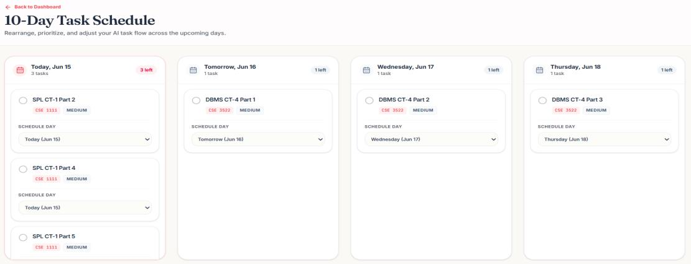
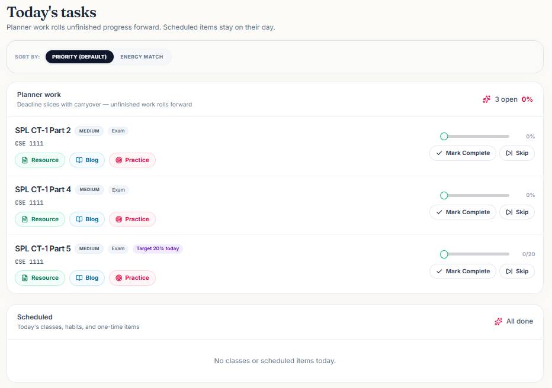
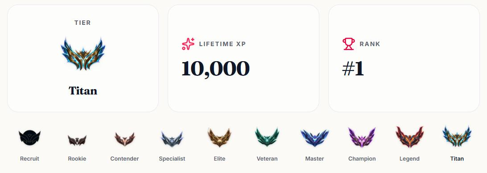
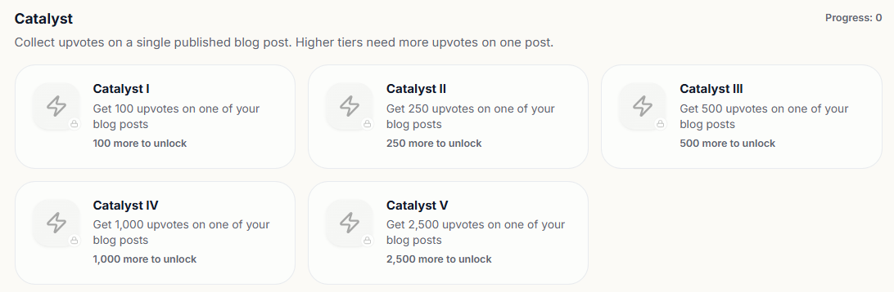
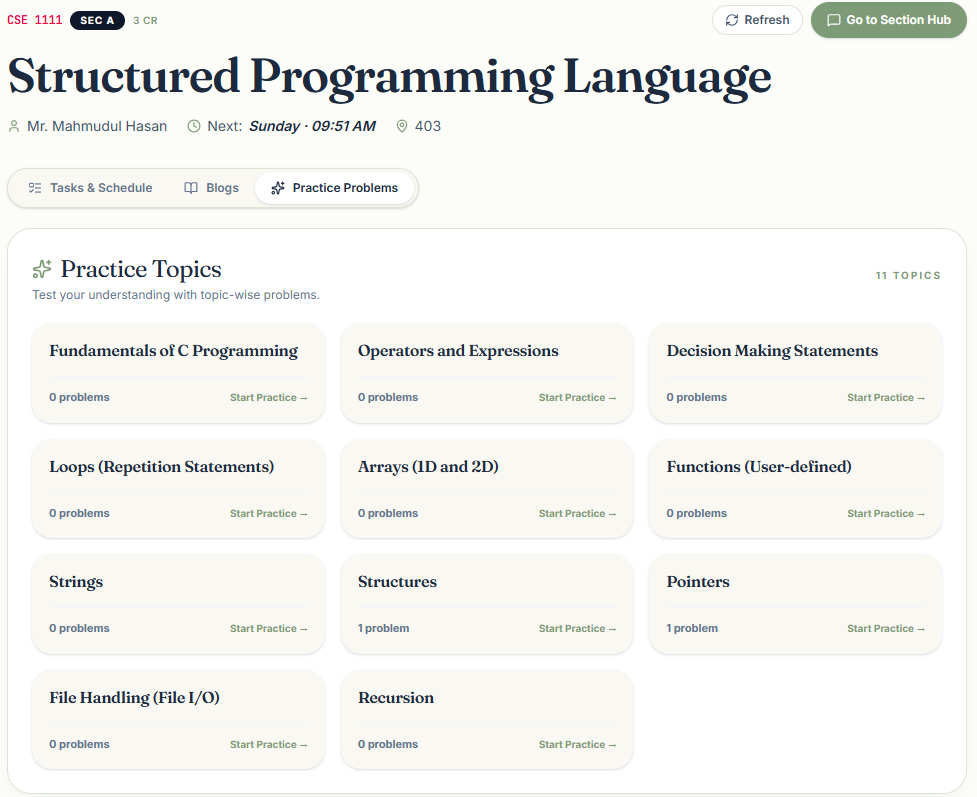
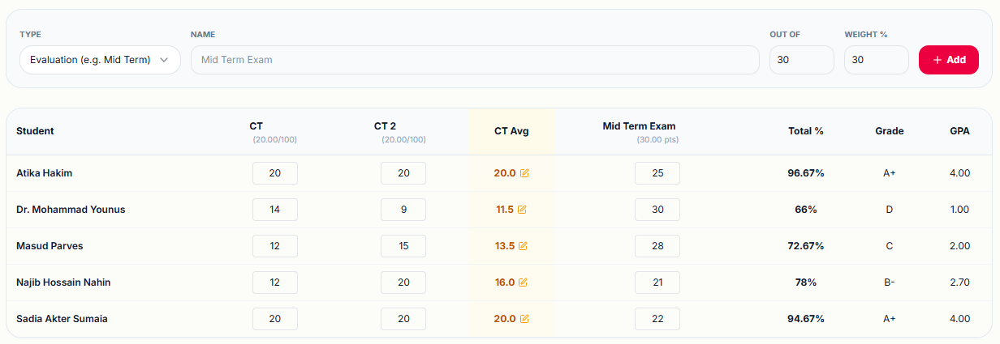
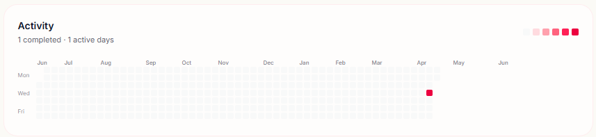

DisciPlan is a centralized academic operating system and gamified task-management engine designed to unite students and faculty in a single, frictionless ecosystem. Built as a unified productivity "second brain," DisciPlan replaces stressful deadline panic with structured, mindful execution. By housing daily task planning, collaborative workspaces, section repositories, and community discussions under one roof, it eliminates the heavy administrative cognitive overhead and decision fatigue traditionally caused by switching between fragmented learning applications.
| Architecture Layer | Technologies Utilized |
|---|---|
| Frontend Architecture | React 19, TypeScript, TanStack Router / TanStack Start, TanStack Query, Tailwind CSS, Radix UI, shadcn/ui |
| Build & Runtime | Vite, Bun (with Node/NPM fallback support) |
| Backend Engineering | FastAPI, Uvicorn (Asynchronous ASGI Server) |
| Security & Auth | JSON Web Tokens (JWT) via python-jose, bcrypt hashing |
| Database & Storage | Aiven for MySQL (Cloud Relational), Cloudinary (Binary Assets) |
| Infrastructure | Render Infrastructure-as-Code (render.yaml orchestration) |
Unlike traditional applications built on top of high-overhead Object-Relational Mappers (ORMs), DisciPlan's backend architecture executes raw, parameterized SQL queries directly through an asynchronous repository layer. This intentional design choice eliminates serialization bottlenecks, simplifies complicated data mutations, and grants complete optimization authority over database execution paths.
[ CLIENT SIDE // React 19 + TanStack Start ]
│
│ (Asynchronous REST API Calls via fetch / TanStack Query)
▼
[ MIDDLEWARE LAYER // FastAPI Backend + Uvicorn ASGI Server ]
│
│ (Executes raw, parameterized MySQL queries compiled natively)
▼
[ DRIVER PROTOCOL // Asynchronous Driver: asyncmy (SSL-secured connection pooling) ]
│
│ (High-Performance Async Pooling Stream)
▼
[ PERSISTENCE NODE // Database: Aiven for MySQL (Cloud Relational Cluster) ]






